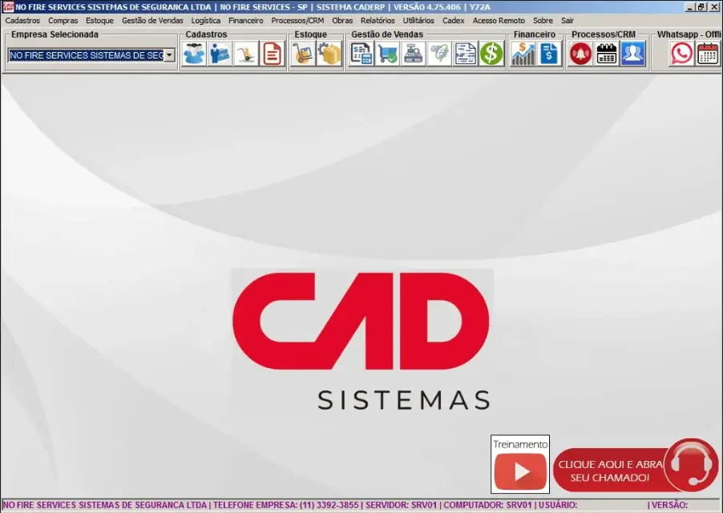

Objetivo da aula
Orientar o usuário quanto ao acesso ao sistema, ao uso das credenciais de login, à leitura da interface inicial e aos primeiros cuidados de navegação no CAD ERP.
Esta aula estabelece a base prática mínima para que as próximas rotinas sejam executadas com entendimento do ambiente, e não por tentativa e erro.
Como acessar o sistema
O acesso ao CAD ERP deve ser realizado exclusivamente pelo ambiente oficial disponibilizado pela No Fire no computador de trabalho. O usuário deverá localizar o atalho executável previamente configurado para abertura do sistema.
O caminho de acesso pode variar conforme a configuração do posto de trabalho, mas o princípio é o mesmo: o sistema deve ser aberto a partir do atalho ou executável oficialmente disponibilizado pela empresa.
O CAD ERP não deve ser acessado por caminhos alternativos, cópias não controladas, arquivos soltos ou tentativas de abertura fora do padrão definido internamente.
Identificação do atalho de acesso
O usuário deverá ser capaz de reconhecer no computador o ícone utilizado para abertura do sistema. Essa identificação é importante para evitar confusão com outros atalhos, utilitários ou arquivos do ambiente.
Ícone de acesso ao sistema
O acesso ao CAD ERP é realizado através do atalho executável disponível no ambiente de trabalho. O usuário deve reconhecer corretamente este ícone antes de iniciar o sistema.
Atalho oficial utilizado para abertura do sistema CAD ERP no ambiente da No Fire.
Login no sistema
Após abrir o sistema, será apresentada a tela de acesso. Nesse momento, o usuário deverá informar as credenciais de login de uso individual, conforme disponibilizadas pela empresa.
O login é parte da segurança operacional. Ele identifica quem está acessando o sistema e vincula o uso do ambiente ao usuário responsável por aquela sessão.
Orientações obrigatórias
- Utilizar apenas o usuário e a senha autorizados para o próprio perfil.
- Não compartilhar credenciais com terceiros.
- Não utilizar login de outro colaborador.
- Em caso de falha de acesso, procurar o responsável definido pela empresa.
- Não insistir em tentativas aleatórias sem orientação.
Tela de login
A tela de login é o primeiro ponto de contato do usuário com o sistema. Ela deve ser compreendida como parte do fluxo normal de acesso e não como barreira técnica.
As credenciais de acesso são pessoais e não devem ser compartilhadas. Todas as ações realizadas no sistema ficam associadas ao usuário logado.
Tela de acesso ao sistema
Após abrir o sistema, será exibida a tela de login. Nela, o usuário deve inserir suas credenciais individuais para acesso ao ambiente.
Tela de login do sistema CAD ERP. O acesso é individual e vinculado ao usuário.
O que o usuário verá após entrar
Após o login, o sistema apresentará sua interface principal. É nesse ambiente que estarão disponíveis as rotinas permitidas ao perfil de acesso do usuário.
Neste momento, não se espera que o usuário domine todas as áreas da tela. O objetivo inicial é reconhecer o ambiente, entender onde está e desenvolver leitura básica da interface.
O primeiro contato com a interface deve ser de reconhecimento e compreensão — não de exploração aleatória.
Interface principal do sistema
A interface principal funciona como ponto de partida para as rotinas operacionais. A partir dela, o usuário acessará as telas e funções que serão tratadas nas aulas seguintes.

O que o usuário deve identificar nessa tela
- O ambiente principal após o login.
- Os elementos básicos de navegação disponíveis.
- Onde se localizam os acessos às rotinas de trabalho.
- Qual é a área ativa antes de iniciar qualquer ação.
Navegação básica
Navegar no sistema não significa abrir telas ao acaso. Significa compreender onde a rotina correta está localizada e acessar essa rotina com atenção ao contexto da operação.
Nas primeiras utilizações, o usuário deve operar com cautela, evitando múltiplas ações simultâneas e sempre confirmando em que ambiente está antes de prosseguir.
Cuidados iniciais de navegação
- Ler a tela antes de clicar em qualquer função.
- Confirmar em qual ambiente está antes de iniciar uma rotina.
- Evitar abrir telas sem necessidade.
- Não assumir que uma função faz algo apenas pelo nome.
- Consultar o treinamento ou o responsável em caso de dúvida.
Comportamento esperado do usuário
O comportamento esperado no primeiro contato com o sistema é de atenção, leitura e disciplina. O objetivo não é “mexer para ver o que acontece”, mas entender o ambiente e operar dentro do que foi orientado.
Esse cuidado é especialmente importante em sistemas corporativos, nos quais uma ação aparentemente simples pode gerar reflexos em outras etapas do processo.
O que não deve ser feito
- Não abrir funções desconhecidas sem necessidade.
- Não tentar adivinhar o funcionamento da tela por tentativa e erro.
- Não utilizar credenciais de terceiros.
- Não ignorar o fluxo de acesso definido pela empresa.
- Não seguir em frente quando houver dúvida sobre o ambiente acessado.
O que o usuário deve levar desta aula
- O sistema deve ser acessado exclusivamente pelo caminho oficial disponibilizado pela empresa.
- Login e senha são de uso individual e fazem parte da responsabilidade operacional do usuário.
- A interface inicial precisa ser lida e reconhecida antes da execução de rotinas.
- Navegar corretamente é parte do processo, e não um detalhe secundário.
Encerramento da aula
Até este ponto, você aprendeu a acessar o sistema e reconhecer sua interface.
No entanto, operar corretamente o CAD ERP exige compreender como a estrutura comercial funciona:
- como o orçamento é construído
- como os itens são utilizados
- como a tabela influencia o resultado
- como os grupos de impressão organizam o documento
Esses elementos serão apresentados nas próximas aula.